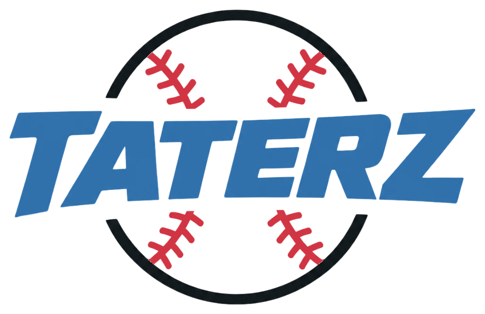

TOP OF THE 1ST
0 BALL · 0 STRIKE
1TOP
0 OUTS
HOME
RUN!
SOLO
HOME RUN
1ST HOME RUN TODAY

PICK YOUR CHALLENGE
Choose a difficulty
You can change this the next time you play.
Connect to your phone with a QR code
Finding this computer…
Open your iPhone Camera and scan the QR code. Tap the link that appears, with both devices on the same Wi-Fi.
Preparing your link
TATERZ
Settings
Set the feel of the field.
TAKE A BREATHER
Game paused
PRACTICE COMPLETE